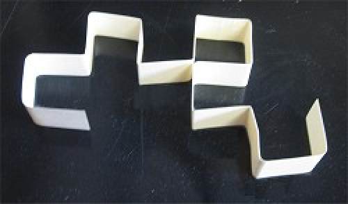

Крива дракона(також відома як фрактал Гартера-Гейвея) - фрактал, який зображається
наступним чином: починаючи з базового сегмента, кожен сегмент замінюється двома сегментами
з прямим кутом і з обертанням на 45°, альтернативно, праворуч і ліворуч.
Гейвей сконструював цей фрактал у 1967, працюючи в NASA наступним чином: склав довгу
полоску паперу навпіл, знову в тім ж напрямку і так n разів. Розкривши зігнутий
папір так, що всі згини під прямим кутом він отримав дракона n-ного порядку.

Множини Жюлія є надмножиною множин Мандельброта, перетином яких є всі нероздільні
результати Жюлія. Ґенеруються вони також схожим способом до множини Мандельброта, проте в формулі
zn+1 = zn2 + c, параметр c є константою, а z -
точкою на площині.
Ґастон Жюлія народився у 19 столітті й вивчав поліноми та раціональні функції. Його
здобутки були забуті, допоки у 1970Бенуа Мандельброт не зґенерував множини Жюлія
комп'ютерно.